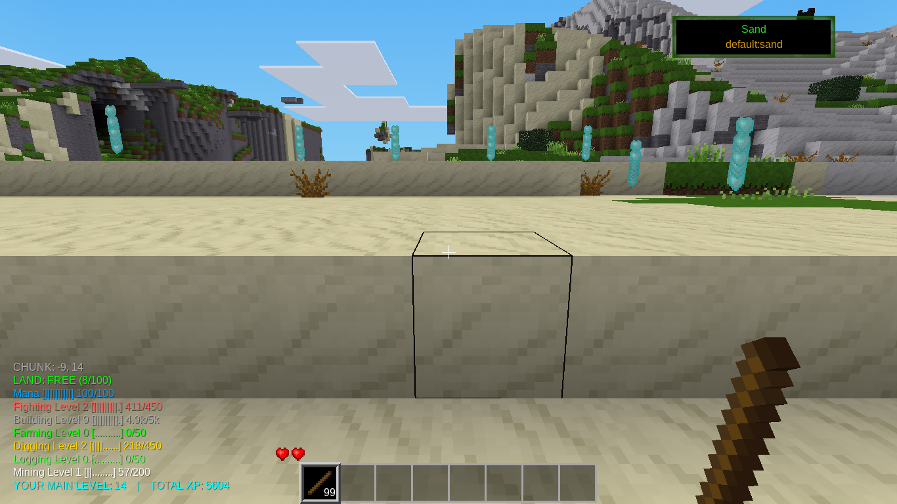
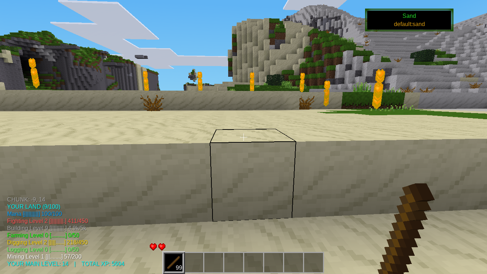

Overview 🔗
The Land Claim mod is designed for Luanti, allowing players to claim chunks of land within the game world. Once claimed, these areas provide protection against various natural elements such as lava, water, and fire from other players as well as tnt and other explosions. The mod includes functionality for claiming, unclaiming, checking ownership, and managing access permissions. A chunk is 16 x 16 nodes. The claim is 150 nodes high.
Features 🔗
>br>
Chunk Claiming: Players can claim chunks to prevent others from altering them.
Lava, Water, and Fire Protection: Stops the spread of these elements into claimed areas from adjacent unprotected land.
Access Management: Owners can grant or revoke other players' access to their claimed chunks.
Fence: When you hold a stick a fence appears to show you where the chunk is. A blue fence means it is free land. Orange means that you own the chunk. Red means that the chunk is owned by another player.
Usage Instructions 🔗
Commands 🔗
Help 🔗
/land_help: Gives you a pop up that tells you all the commands and what they do.
Claiming a Chunk 🔗
/claim: Claims the chunk you are currently standing in. The command will notify if the chunk is already owned by another player.
Unclaiming a Chunk 🔗
/unclaim: Unclaims your current chunk, allowing others to interact with it freely.
Giving land 🔗
/land_give
Checking Ownership 🔗
/is_owner: Checks if you own the chunk where you're currently positioned and provides appropriate feedback.
Access Management 🔗
Grant Access
/trust
Revoke Access
/untrust
/trust_list: Gives you a list of people who are trusted to interact with your land.
Rename the land 🔗
/land_name
Information 🔗
/land_info: Tells you information about the chunk of land you are standing on.
/my_claims: Tells you what chunks you own
Interactions with Other Players 🔗
Players attempting to alter chunks that they do not own will receive a notification stating the owner's name and be prevented from making changes. If an attempt is made by non-owners, such actions are restricted unless they have been explicitly granted access.
Admin 🔗
There are admin commands to help manage the world. - /land_help tells you the commands. Anyone with the server priv is considered an admin.
My Progress 🔗
My Land works with My Progress. You start with 8 claims. As you level up in my progress you get more land claims.
My Money 🔗
If you use mymoney you can buy and sell land. You set the price and put up a for sale sign. A player right clicks on the sign to buy the land.

